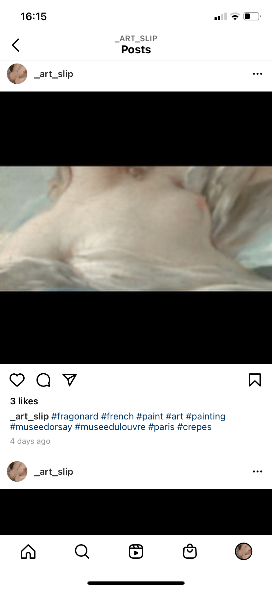
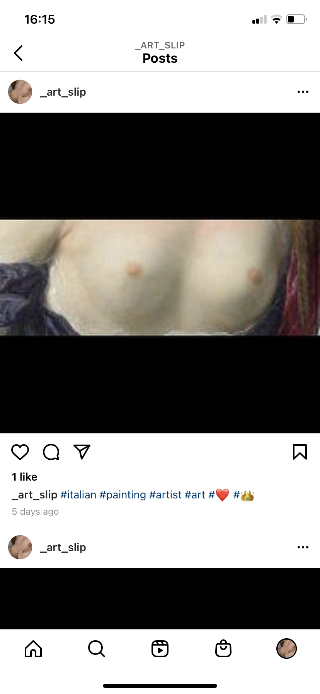
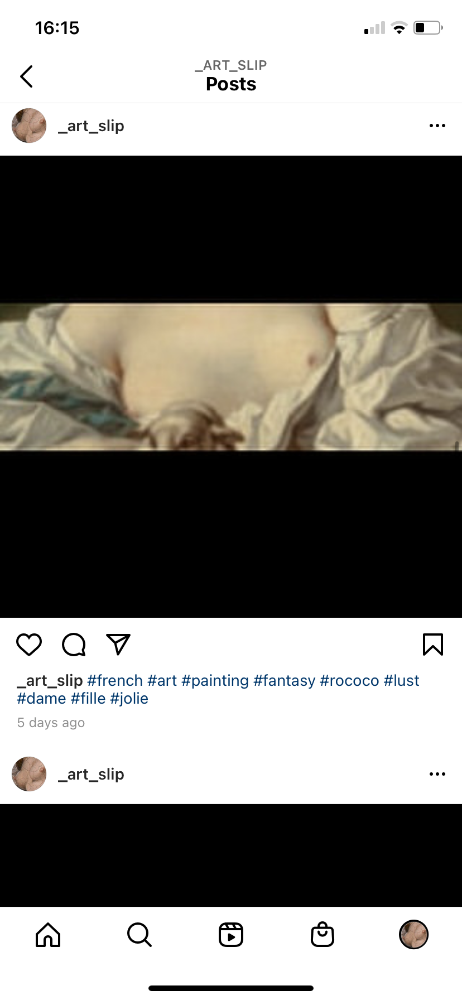
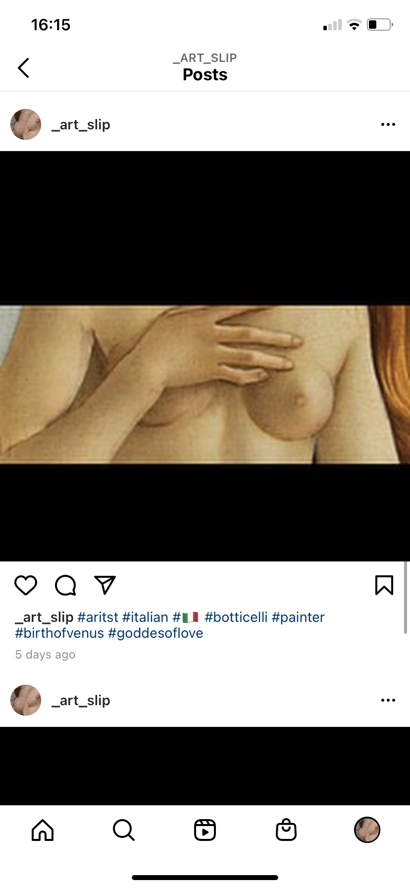
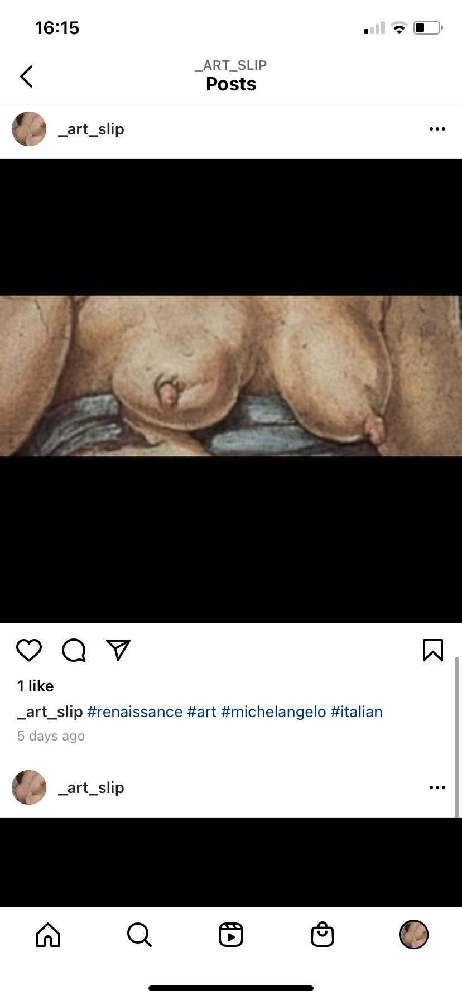
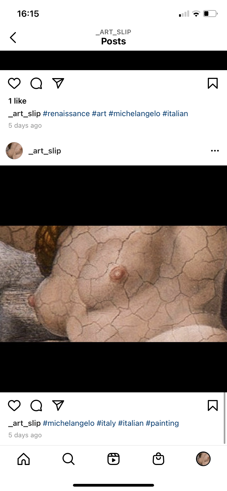

For this project,
art_slip ~(.)(.)~ , I was thinking about the censorship that female bodies are subjected to. I found paintings, made by men, then show bodies with exposed breasts. I took a screenshot of these paintings and cropped out or erased through black boxes everything but the figure’s breasts. Through the use of hashtags, I hope to gain a following. I'm curious who would follow this account? People who are interested in art? People who want to see breasts? People who like the hashtag? Over the course of the week I got 5 followers, all of which came after I added hashtags.
#bordon #venus #art #necklace #rococo #rococostyle #rococofashion

#fragonard #french #paint #art #painting #museedorsay #museedulouvre #paris #crepes

#italian #painting #artist #art #❤️ #👑

#french #art #painting #fantasy #rococo #lust #dame #fille #jolie

#aritst #italian #🇮🇹 #botticelli #painter #birthofvenus #goddesoflove

#renaissance #art #michelangelo #italian

#michelangelo #italy #italian #painting